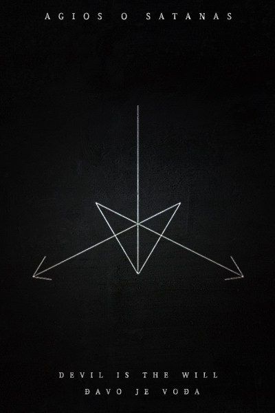

;

Taina lui Satan
Introducere
Acest scurt eseu subliniază câteva lucruri interesante despre termenii Satan şi Satanism (şi prin urmare Satanist), inclusiv folosirea lor istorică, în limba engleză şi astfel îi poate ghida pe cei sagace la o înțelegere a [1] tainei lui Satan: aceea că secretul misterios al lui Satan este simpla realitate eretică şi conflictuală de a fi sau de a deveni un satan.
Satan
Scribii Septuagintei au redat în cea mai mare parte ebraicul שָׂטָן ca ὁ διάβολος/τω διάβολω (diabolos) - şi care termen grecesc se referă la cineva care este un adversar şi care, astfel, este considerat peiorativ (de către cei cărora li se opune), ca intrigant, drept cineva care complotează împotriva lor; sensul este cel de ἐπίβουλος (amenințător)- intrigant împotriva / opus (aşa numitului "popor ales"). Cineva care stârneşte probleme şi disidență.
Doar în câteva părți mai târzii – precum Iov sau Cronici - cuvântul ebraic pare să sugereze altceva, şi cu aceste ocazii, cuvântul apare de obicei cu articolul hotărât: hasatan – satan-ul: marele duşman (al aşa-numitului "popor ales") şi marele uneltitor, căruia în unele pasaje i se dă o hagiografie fantezistă ca "înger decăzut".
Acum, având în vedere că cele mai vechi părți cunoscute ale Septuagintei datează din jurul secolului al doilea î.e.n. [2] - şi, astfel, ar putea fi foarte bine contemporane cu (sau nu cu mult mai în vechi decât) compunerea celor mai multe scrieri ale Pentateuhului ebraic (cel mai vechi fiind din jurul anului 230 î.e.n. [3]) - această redare de către scribi a cuvântului satan ca ὁ διάβολος / τω διάβολω este foarte interesantă şi indicativă având în vedere sensul grecesc şi susține afirmația că, aşa cum fusese inițial utilizat şi înțeles, satan este o ființă umană sau mai multe care complotează "diabolic" împotriva sistemului sau care sunt "diabolic" opuse celor care se consideră ca fiind "aleşi" de către Zeul lor monoteist, şi abia mult mai târziu "satan-ul" a devenit, în mintea scriitorilor părților ulterioare ale Vechiului Testament, un fel de "înger decăzut" diabolic.
Astfel, este general acceptat de către oamenii de ştiinţă că cuvântul ebraic satan (de obicei, asatan), în fazele de început ale Vechiului Testament înseamnă un oponent uman sau adversar (al poporului ales al lui Dumnezeu, evreii) [4] sau cineva care complotează împotriva lor.
Acum, după cum s-a menționat în mai multe texte ONA anterioare, în contradistincție eretică față de alții şi mai ales pentru a contrazice auto-intitulații satanişti moderni, ONA afirmă că cuvântul satan îşi are originea în greaca veche.
Prin urmare, aceasta este afirmația noastră - cuvântul ebraic derivă din vechiul cuvânt (de origine feniciană)care a devenit grecescul αἰτία / αἴτιος - ca de exemplu în homericul μείων γὰρ αἰτία (a acuza / a da vina), sau ca în "o acuzație" (qv. Eschil: αἰτίαν ἔχειν) - și că această formă greacă mai veche este cea care a devenit coruptă la ebraicul "satan" și de unde, de asemenea, vine şi "Shaitan" al islamului. În plus, în greaca perioadei clasice αἰτία și διαβολή - acuzaţie, calomnie, ceartă - au fost deseori folosite pentru același lucru, atunci când un sens negativ era implicit (ca într-o acuzație falsă) față de persoana acuzată (aceasta devenind astfel un adversar al celor care-l acuză), sau atunci când exista dușmănie (și astfel, opoziție, intrigi și comploturi), de exemplu, aşa cum a fost menționat de către Tucidide-κατὰ τὰς ἰδίας διαβολὰς (2.65).
Având în vedere faptul că, timp de secole, שָׂטָן așa cum este descris în Vechiul Testament al evreilor, a fost frecvent scris în limba engleză ca sathans [5] și, astfel, pronunțat ca sath-ans (și nu ca say-tan) este, probabil, ușor de înțeles modul cum grecescul αἰτία - sau mai vechiul αἴτιος homeric - putea fi transformat, de către non-greci, pentru a deveni שָׂטָן
În ceea ce privește acest Dumnezeu și acest "Înger Căzut", după cum se menționează şi în alt text ONA:
"Există dovezi solide pentru a sugera că, din punct de vedere istoric, autorii Vechiului Testament s-au inspirat din, sau au adaptat, povești, mituri și legende mai vechi despre o zeitate persană care a ajuns să fie numită Ahriman, care ar putea fi astfel considerat arhetipul biblicului Satan, și, de asemenea, al coranicului Iblis. În mod similar, există dovezi că Dumnezeu - Iehova - din Vechiul Testament se poate sa fi fost bazat pe mituri și legende despre o zeitate persană, care a ajuns să fie numită Ahura Mazda ". O scurtă istorie și ontologie a lui Satan
În plus, în ciuda pretenţilor unor cărturari evrei şi nazariteni, devine acum acceptat faptul că cele mai vechi părți ale Vechiului Testament au fost scrise, probabil, între 230 î.e.n. și 70 î.e.n., și, astfel, la mare distanţă de timpul unor greci precum Eschil, și la mult timp după ce cuvântul grecesc aitia era folosit pentru acuzație.
De asemenea, este interesant faptul că există o utilizare timpurie, în limba engleză, a termenului la plural satans ca adversari , care se găseşte în cartea A paraphrase on the New Testament with notes, doctrinal and practical (O parafrază a Noului Testament cu note, doctrinară și practică) publicată la Londra în 1685 e.n. și scrisă de Richard Baxter , născut în Shropshire:
” To hinder us in God’s work and mens Salvation, is to be Satans to us. O how many Satans then are called reverend Fathers, who silence and persecute men for God’s work.” Matthew, xvi. 23
Într-o lucrare anterioară, publicată în 1550, copii lui Sathan (chyldren of Sathan) sunt asociaţi cu ereticii:
“Dyuers Bysshoppes of Rome beynge Annabaptystes, heretyques, scismatiques, & chyldren of Sathan.” John Coke. The debate betwene the heraldes of Englande and Fraunce. 1550, g. Givv [Débat des hérauts d'armes de France et d'Angleterre. Paris, Firmin Didot et cie, 1877 ]
Astfel, satan / sathan / sathanas, ca şi termen înțeles istoric descrie: (1) o fiinţă sau fiinţe umane care complotează diabolic sau care uneltesc sau care se opun celor care [6] se consideră aleşi de Dumnezeul lor monoteist; și / sau (2) o persoană sau mai multe care sunt eretice și opozante, împotriva status quo-ul, și, mai ales, se pare, împotriva religiei nazaritenilor.
Satanism
Cea mai veche folosire a termenului Satanism în limba engleză, adica a sufixului -ism aplicat cuvântului Satan –atât cat se ştie până acum - este în A Confutation of a Booke Intituled ‘An Apologie of the Church of England’, publicată la Anvers în 1565 și scrisă de către disidentul catolic Thomas Harding:
“Meaning the time when Luther first brinced to Germanie the poisoned cuppe of his heresies, blasphemies, and sathanismes.” A Confutation, Antwerp, 1565, ii. ii. f. 42v
Trei lucruri sunt de interes, aici.
(1) În primul rând, ortografia, sathanismes - derivând din sathan, o ortografie utilizată pentru multe secole, ca de exemplu în Piers Plowman, scrisă de Langland în 1337:
“For þei seruen sathan her soule shal he haue.” Piers Plowman B. ix. 61
Şi de asemenea, secole mai târziu în piesa din 1669 Man’s the Master de William Davenant:
“A thousand Sathans take all good luck.” (v. 87)
(2) Al doilea punct de interes este faptul că, după cum arată citatele de mai sus şi altele, termenul sathan a fost, de asemenea, folosit frecvent pentru a desemna pe cineva care era un intrigant, un complotist, un șarlatan, sau un adversar.
(3) Al treilea punct de interes este faptul că prima utilizare a sufixului - de către Thomas Harding - precum și utilizarea comună ulterioară a termenului Satanism are semnificația unei naturi, unui personaj sau a unei doctrine adversare sau diabolice. Cu alte cuvinte, cele mai vechi sensuri și utilizarea termenului Satanism nu sunt de "venerare a lui Satan" şi nici convingeri religioase sau filozofice asociate cu figura lui Sathan.
În plus, după cum s-a menționat anterior, o utilizare timpurie (1685) a termenului Satans imputa, de asemenea, sensul de mai sus, al unui caracter adversar sau diabolic:
“To hinder us in God’s work and mens Salvation, is to be Satans to us. O how many Satans then are called reverend Fathers, who silence and persecute men for God’s work.” Richard Baxter. A paraphrase on the New Testament with notes, doctrinal and practical. London, 1685 CE, Matthew, xvi. 23
Într-adevăr, în 1893 scriitorul Goldwin Smith a folosit termenul de Satanism, în acest sens general mai vechi, pentru a se referi la un tip de revoluție socială distructivă:
” That sort of social revolution which may be called Satanism, as it seeks, not to reconstruct, but to destroy.” Goldwin Smith. Essays on questions of the day. (Macmillan, 1893 CE)
Similar, un articol mai vechi din anul 1833 in Fraser’s magazine for Town and Country utiliza termenul în conexiune cu Byron:
” This scene of Byron’s is really sublime, in spite of its Satanism.” Vol 8 no. 524 Astfel, termenul englezesc satanism / sathanism - înțeles din punct de vedere istoric – descrie: (1) o blasfemie, o erezie sau erezii; (2) un tip de opoziție distructiv (practic).
Satanist
Cele mai vechi utilizări ale termenului Satanist, adică a sufixului -ist aplicate termenului Satan - până în prezent cunoscute - atribuie, de asemenea, o semnificație similară cu cele de mai sus, adică un personaj sau o natură adversară sau diabolică, sau de eretici și doctrine eretice / adversare:
” The Anabaptistes, with infinite other swarmes of Satanistes.” John Aylmer. An harborowe for faithfull and trewe subjects agaynst the late blowne blaste concerning the gouernment of wemen. London, 1559, sig. H1v
“Be ye Zuinglians, Arians, Anabaptistes, Caluinistes, or Sathanistes?” Thomas Harding. A Confutation of a Booke Intituled ‘An Apologie of the Church of England’ . Antwerp, 1565.
“By nature an Athiest, By arte a Machiuelist, In summe a Sathanist, loe here his hire.” Marphoreus. Martins Months Minde. 1589 [7]
Abia mult mai târziu, începând din 1896, termenul Satanist a fost folosit pentru a-i descrie pe cei care pretindeau a se închina lui Satan:
” There are five temples of Satanism in Paris itself.” Arthur Lillie.The worship of Satan in modern France. London 1896.
” It is believed on the Continent that apostate priests frequently consecrate for the Satanists and Freemasons.” Joseph McCabe.Twelve years in a monastery. London, 1897. Astfel, termenul englezesc satanist / sathanist - înțeles din punct de vedere istoric - descrie: (1) un personaj diabolic, adversar; (2) cei care aderă sau susţin doctrine eretice.
Concluzie
Aşa cum a scris cineva cu peste două mii de ani în urmă – εἰδέναι δὲ χρὴ τὸν πόλεμον ἐόντα ξυνόν, καὶ δίκην ἔριν, καὶ γινόμενα πάντα κατ΄ ἔριν καὶ χρεώμενα. [8]
Anton Long
Ordinul celor Nouă Unghiuri
Anul lui Fayen 122
Note
[1]
În original, “The Geryne of Satan”. Vechiul cuvânt englez gerȳne – din vechiul cuvânt saxon girūni – înseamnă “secret, mister”.[2]
Cel mai vechi fragment de manuscris – Greek Papyrus 458 din colecţia Rylands Papyri [qv. Bulletin of the John Rylands Library, 20 (1936), pp. 219-45] – a fost găsit în Egipt şi datează din secolul al doilea î.e.n. .[3]
Este, desigur, în interesul atât a nazaritennilor cât și a magienilor să susțină sau să creadă că Vechiul Testament al evreilor a fost scris cu secole înainte de această dată, la fel cum și o astfel de datare timpurie este o presupunere comună perpetuată atât de către cei care consideră Internetul ca fiind o sursă sigură de informații și de către cei care nu au studiat subiectul, timp de câțiva ani, într-o manieră științifică. Dacă ar fi întreprins un astfel de studiu academic , ar fi conștienți de disputele academice despre datarea Vechiului Testament ebraic - și a Septuagintei – dispute care există de mai bine de o sută de ani și de asemenea, abia atunci ar fi în măsură să-şi facă o părere proprie în cunoștință de cauză cu privire la această chestiune.Judecata mea informată este că există dovezi solide care să sugereze că 230 (± 50) î.e.n. este cea mai veche dată probabilă pentru Vechiul Testament ebraic. Ar trebui, totuși, să adaug, că aceasta este încă o "opinie minoritară", mulţi academicieni favorizând încă varianta mai "sigură" (care este, în prezent, mai acceptabilă) de 350 (± 30) î.e.n. .
[4]
De exemplu – καὶ ἦσαν σαταν τῷ Ισραηλ πάσας τὰς ἡμέρας Σαλωμων (3 Regi 11:14)[5]
Vezi secţiunea despre Satanism de mai jos.[6]
καὶ ἔστη διάβολος ἐν τῷ Ισραηλ[7]
Vezi The Martin Marprelate Tracts (1588–89) şi Cambridge History of English Literature, volumul III - Renascence and Reformation, Cambridge UP, 1920, p. 394f[8]
Omul trebuie sa fie conştient că Polemos pătrunde, cu discordie δίκη, şi că toate fiinţele se nasc natural prin discordie (dezbinare, notă F.B.). [Trad DWM]ONA
Traducerea şi adaptarea:
Florin Baciu // Flacăra~Neagră
Florin Baciu // Flacăra~Neagră